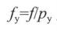

聊一聊OpenCV相機標定
這篇文章主要為大家詳細介紹了OpenCV相機標定的相關資料，即獲得相機引數的過程，具有一定的參考價值，感興趣的小夥伴們可以參考一下
相機標定：簡單的說，就是獲得相機引數的過程。引數如：相機內參數矩陣，投影矩陣，旋轉矩陣和平移矩陣等
什麼叫相機引數？
簡單的說，將現實世界中的人、物，拍成一張影象（二維）。人或物在世界中的三維座標，和影象上對應的二維座標間的關係。表達兩種不同維度座標間的關係用啥表示？用相機引數。
相機的成像原理
先來看一下，相機的成像原理：
如圖所示，這是一個相機模型。將物體簡化看成一個點。來自物體的光，通過鏡頭，擊中影象平面（影象感測器），以此成像。d0是物體到鏡頭的距離，di時鏡頭到影象平面的距離，f是鏡頭的焦距。三者滿足以下關係。
現在，簡化上面的相機模型。
將相機孔徑看成無窮小，只考慮中心位置的射線，這樣就忽視了透鏡的影響。然後由於d0遠遠大於di，將影象平面放在焦距處，這樣物體在影象平面上成像為倒立的影像（沒有透鏡的影響，只考慮從中心的孔徑進入的光線）。這個簡化的模型就是針孔攝像機模型。然後，我們在鏡頭前，將影象平面放在焦距距離的位置，就可以簡單獲得一個筆直的影象（不倒立）。當然，這只是理論上的，你不可能將影象感測器從相機裡拿出來，放在鏡頭前面。實際應用中，針孔攝像機應該是將成像後的影象倒過來，以獲得正立的影象。
到此，我們獲得了一個簡化的模型，如下圖：
h0是物體的高，hi是影象上物體的高，f是焦距（距離），d0是影象到鏡頭的距離。四者滿足如下關係：
（1）
物體在影象中的高度hi，和d0成反比。也就是說，離鏡頭越遠，物體在影象中越小，離得越近越大（好吧，這句話是廢話）。
但通過這個式子，我們便能夠預測三維中的物體，在影象（二維）中的位置。那麼怎麼預測？
相機標定
如下圖所示，根據上面簡化的模型，考慮三維世界中的一個點，和其在影象（二維）中的座標關係。
（X，Y，Z）為點的三維座標，（x，y）為其通過相機成像後在影象（二維）上的座標。u0和v0是相機的中心點（主點)，該點位於影象平面中心（理論上是這樣。但實際的相機會有幾個畫素的偏差）
現在只考慮y方向上，由於需要將三維世界中的座標，轉換為影象上的畫素（影象上的座標，實際上是畫素的位置），需要求y方向上焦距等於多少個畫素（用畫素值表示焦距），Py表示畫素的高，焦距f（米或毫米）。垂直畫素表示的焦距為

根據式子（1），只考慮y方向。我們三維世界中得點，在影象（二維）中y的座標。
同理，得到x的座標。
現在，將上圖中的座標系的原點O，移動到影象的左上角。由於（x，y）是關於（u0，v0）的偏移，上面表示影象（二維）中點的座標的式子不變。將式子以矩陣的形式重寫，得。

其中，等式左邊的第一個矩陣，叫做“相機內參數矩陣”，第二個矩陣叫（投影矩陣）。
更為一般的情況，開始時的參考座標系不位於主點（中心點），需要額外兩個引數“旋轉向量”和“平移向量”來表示這個式子，這兩個引數在不同視角中是不一樣的。整合後，上述式子重寫為。
校正畸變
通過相機標定，獲得了相機引數後，可以計算兩個對映函式（x座標和y座標），它們分別給出了沒有畸變的影象座標。將畸變的影象重新對映成為沒有畸變的影象。
程式碼：
做相機標定時，一般用標定板(棋盤）拍攝一組影象，利用這些影象提取角點，通過角點在影象中得座標和三維世界中的座標（通常自定義3維座標），計算相機引數。
1 2 3 4 5 | std::vector<cv::Point2f>imageConers;//提取標定影象角點，儲存角點座標（二維） cv::findChessboardCorners(image, boardSize, //角點數目如（6,4）六行，四列 imageConers); |
函式calibrateCamera完成相機標定工作。
1 2 3 4 5 6 7 8 9 | cv::calibrateCamera(objectPoints,//三維座標 imagePoints, //二維座標 imageSize,//影象大小 camerMatirx,//相機內參數矩陣 disCoeffs,//投影矩陣 rvecs, //旋轉 tvecs,//平移flag //標記opencv提供幾種引數，可以參看線上的opencv document); |
計算畸變引數，去畸變
1 2 3 4 5 6 7 8 9 10 | //計算畸變引數cv::initUndistortRectifyMap(camerMatirx, disCoeffs, cv::Mat(), cv::Mat(), image.size(), CV_32FC1, map1, //x對映函式 map2 //y對映函式 );//應用對映函式cv::remap(image, //畸變影象undistorted, //去畸變影象map1, map2, cv::INTER_LINEAR); |
現在整合程式碼。
示例：
標頭.h
1 2 3 4 5 6 7 8 9 10 11 12 13 14 15 16 17 18 19 20 21 22 23 24 25 26 27 28 29 30 31 32 33 34 35 36 37 38 39 40 41 42 43 44 45 46 47 48 49 50 51 52 53 54 55 56 57 58 59 60 61 62 63 64 65 66 67 68 69 70 71 72 73 74 75 76 77 78 79 80 81 82 83 84 85 86 87 88 89 90 91 92 93 94 95 96 97 98 99 100 | #include<opencv2\core\core.hpp>#include<opencv2\highgui\highgui.hpp>#include<opencv2\imgproc\imgproc.hpp>#include<opencv2\calib3d\calib3d.hpp>#include <opencv2/features2d/features2d.hpp>#include<string>#include<vector>class CameraCalibrator{private: //世界座標 std::vector < std::vector<cv::Point3f >> objectPoints; //影象座標 std::vector <std::vector<cv::Point2f>> imagePoints; //輸出矩陣 cv::Mat camerMatirx; cv::Mat disCoeffs; //標記 int flag; //去畸變引數 cv::Mat map1, map2; //是否去畸變 bool mustInitUndistort; ///儲存點資料 void addPoints(const std::vector<cv::Point2f>&imageConers, const std::vector<cv::Point3f>&objectConers) { imagePoints.push_back(imageConers); objectPoints.push_back(objectConers); }public: CameraCalibrator() :flag(0), mustInitUndistort(true){} //開啟棋盤圖片，提取角點 int addChessboardPoints(const std::vector<std::string>&filelist,cv::Size &boardSize) { std::vector<cv::Point2f>imageConers; std::vector<cv::Point3f>objectConers; //輸入角點的世界座標 for (int i = 0; i < boardSize.height; i++) { for (int j = 0; j < boardSize.width; j++) { objectConers.push_back(cv::Point3f(i, j, 0.0f)); } } //計算角點在影象中的座標 cv::Mat image; int success = 0; for (int i = 0; i < filelist.size(); i++) { image = cv::imread(filelist[i],0); //找到角點座標 bool found = cv::findChessboardCorners(image, boardSize, imageConers); cv::cornerSubPix(image, imageConers, cv::Size(5, 5), cv::Size(-1, -1), cv::TermCriteria(cv::TermCriteria::MAX_ITER + cv::TermCriteria::EPS, 30, 0.1)); if (imageConers.size() == boardSize.area()) { addPoints(imageConers, objectConers); success++; } //畫出角點 cv::drawChessboardCorners(image, boardSize, imageConers, found); cv::imshow("Corners on Chessboard", image); cv::waitKey(100); } return success; } //相機標定 double calibrate(cv::Size&imageSize) { mustInitUndistort = true; std::vector<cv::Mat>rvecs, tvecs; //相機標定 return cv::calibrateCamera(objectPoints, imagePoints, imageSize, camerMatirx, disCoeffs, rvecs, tvecs, flag); } ///去畸變 cv::Mat remap(const cv::Mat &image) { cv::Mat undistorted; if (mustInitUndistort) { //計算畸變引數 cv::initUndistortRectifyMap(camerMatirx, disCoeffs, cv::Mat(), cv::Mat(), image.size(), CV_32FC1, map1, map2); mustInitUndistort = false; } //應用對映函式 cv::remap(image, undistorted, map1, map2, cv::INTER_LINEAR); return undistorted; } //常成員函式，獲得相機內參數矩陣、投影矩陣資料 cv::Mat getCameraMatrix() const { return camerMatirx; } cv::Mat getDistCoeffs() const { return disCoeffs; }}; |
源.cpp
1 2 3 4 5 6 7 8 9 10 11 12 13 14 15 16 17 18 19 20 21 22 23 24 25 26 27 28 29 30 31 32 33 34 35 36 37 38 39 40 | #include"標頭.h"#include<iomanip>#include<iostream>int main(){ CameraCalibrator Cc; cv::Mat image; std::vector<std::string> filelist; cv::namedWindow("Image"); for (int i = 1; i <= 22; i++) { ///讀取圖片 std::stringstream s; s << "D:/images/chessboards/chessboard" << std::setw(2) << std::setfill('0') << i << ".jpg"; std::cout << s.str() << std::endl; filelist.push_back(s.str()); image = cv::imread(s.str(),0); cv::imshow("Image", image); cv::waitKey(100); } //相機標定 cv::Size boardSize(6, 4); Cc.addChessboardPoints(filelist, boardSize); Cc.calibrate(image.size()); //去畸變 image = cv::imread(filelist[1]); cv::Mat uImage=Cc.remap(image); cv::imshow("原影象", image); cv::imshow("去畸變", uImage); //顯示相機內參數矩陣 cv::Mat cameraMatrix = Cc.getCameraMatrix(); std::cout << " Camera intrinsic: " << cameraMatrix.rows << "x" << cameraMatrix.cols << std::endl; std::cout << cameraMatrix.at<double>(0, 0) << " " << cameraMatrix.at<double>(0, 1) << " " << cameraMatrix.at<double>(0, 2) << std::endl; std::cout << cameraMatrix.at<double>(1, 0) << " " << cameraMatrix.at<double>(1, 1) << " " << cameraMatrix.at<double>(1, 2) << std::endl; std::cout << cameraMatrix.at<double>(2, 0) << " " << cameraMatrix.at<double>(2, 1) << " " << cameraMatrix.at<double>(2, 2) << std::endl; cv::waitKey(0);} |
實驗結果：
看以看到，相機內參數矩陣為
172.654 、0、157.829
0、184.195、118.635
0 、0 、1
以上就是本文的全部內容，希望對大家的學習有所幫助，也希望大家多多支援itread01.com。